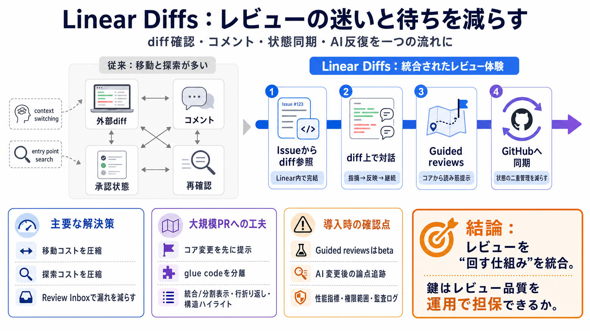

Reviews – Linear Docs
Linear Diffs let you review code changes directly in Linear—so you can read diffs, follow conversations, and complete re…

コードレビューをLinear内で完結し、状態同期とガイド付きUIで大規模PRの“迷い”と“手戻り待ち”を減らす。
通常のPR差分（diff）確認は外部画面で、レビューコメントや承認状態も行き来しがちです。さらにAIエージェントがコード生成を増やすほど、人の最終責任に基づくレビュー負荷が上がります。
Linear Diffsは、PRに紐づくissueからdiffをLinear上で参照し、レビューや追加変更の反復まで進めます。Linearでのレビュー内容はGitHubへ同期され、状態の二重管理を減らします。
変更要求から修正までを、エージェントのバックグラウンドコーディング反復としてdiff表面で進めます。変更はリアルタイムにdiffへ反映され、毎回ローカル確認する手間を下げる狙いです。
Guided reviewsは、大量diffで起きる「入口探し」「重要変更の見落とし」を抑える表示スタイルです。変更のコアを先に提示し、各セクションに説明と影響を付けます。
glue code（結合コード）や付随的変更を分けて見せ、レビューの焦点がブレにくい設計にします。単回セッションで最後まで読み切る確率を上げることが狙いです。
レビュー依頼、承認済みPR、コメント言及などをLinearのInboxに統合します。さらにデフォルト並び順で“出荷（マージ）に近いもの”から優先表示します。
Linearでのレビュー結果がGitHubにも反映されるため、進捗の“現在地”を追いやすくなります。レビュー担当者が複数画面を行き来して迷う状況を抑えます。
大規模PRでもdiff表示をレスポンシブにするため、統合/分割表示、行折り返し、構造ハイライト、テーマ選択などを提供します。視覚の工夫は“理解の手がかり”にもなります。
Linear Diffsは、レビューを“移動コスト”と“探索コスト”の両方から解放する方向性です。Linear内で完結し、状態は同期され、ガイド付きUIで最初の読み筋を作ります。
従来はdiff確認・コメント・承認が別々になりやすい一方、Linear Diffsはその“流れ”をLinearへ寄せます。加えてエージェント反復とガイド付きレビューで速度と流動性を高めます。
エージェント変更後にレビュー観点が体系的に維持されるかは、発表文だけでは不明です。加えてGuided reviewsはbetaのため、誘導の妥当性や見落としリスクは検証が必要です。
性能指標が提示されていないため、「大規模PRでもレスポンシブ」の体感は環境依存の可能性があります。さらに、エージェント変更の権限範囲・監査ログ・コメント追跡などは追加確認が望まれます。
Linear Diffsは、レビューを回すための統合体験を提供し、移動と探索のボトルネックを緩和する提案です。AIエージェント前提なら、品質担保（論点再確認・追跡・誤誘導検証）をプロセスとして設計できるかが鍵になります。
Linear Diffs let you review code changes directly in Linear—so you can read diffs, follow conversations, and complete re…
Our team provides a detailed overview of the GitHub integration on Linear, including setup, workflow automation, and adv…
This tutorial walks you through how to: Connect Linear. Configure triggers. Automatically receive DevOps updates (PRs, w…
Linear's GitHub integration keeps your work in sync in both applications. It links issues to Pull Requests and commits s…
/**/** * The legacy model of software development * The legacy model of software development * built around human-only …